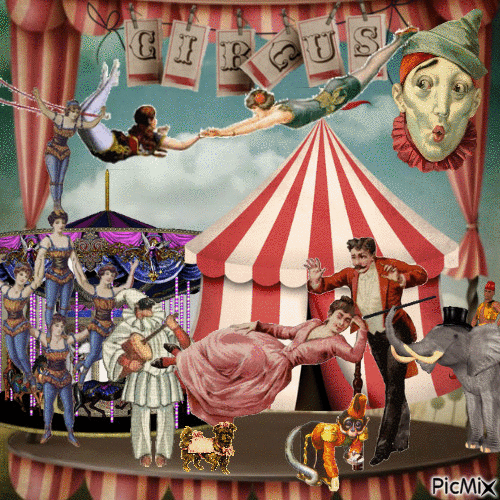

JS Fundamentals
Hey Daniel, what IS Javascript and what do HTML and CSS have to do with it?
I'm glad you ask, omnipresent being.
Javascript is a programming language that allows you to add
interesting and usually interactive features to your
website. Websites are very much like a circus.
You have the ringmaster, the clowns, the animals and the
audience
which are your HTML, these are the things that make up your circus

The make up and costumes and decarations are your CSS, they make your performers look professional and separate them from the audience.
The performance and the rides are the Javascript, these are the things that make your circus exciting and interactive.
Clowns kinda freak me out, so thanks for that. What about this control flow and loops stuff I keep hearing about?
Control flow is the order that a browser reads your Javascript, is like the way your brain knows how to put your
shoes and socks. Your brain knows that your socks go on first and then once they're on, then your shoes go on
next.
A loop is connected to the control flow by telling the browser how many times to process that
information, until
it can stop. In relation to your shoes and socks, you have to tell your brain that you put your shoes and socks
one foot and the loop and put your shoes and socks on the other foot!
I'm more of a sock sock, shoe shoe type person myself.
Okay, what about the DOM? What does Christian Grey from the hit movie 50 Shades of Grey have to do with
this?
I mean technically speaking he was a sadist.
The DOM is Document Object Model, the structure of your website than combines your HTML, CSS and Javascript together.
Like a big family tree, the DOM links each element in a document together, linking all the way back the the first
ancestor, the </html> tag.
Being the great genealogist that Javascript is, the DOM allows them to interact with any element on the HTML.
What about the difference between an Array and an Object?
An array is a collection of data that is typically of the same type, like numbers, names and items. Objects are pieces of data that are contain other pieces of data, for food this might be the price or the stock available. They both connect back to a single source but Arrays store data in a list and objects store data per object.
Finally what the func is a function?
A function is a label for a block of code, which allows Javascript to recall blocks of code without writing the entire thing out again everytime you need to call it. They're like bookmarks in cookbooks so Javascript can always find the recipe it needs.
Okay I think I get it, thanks Daniel.
No problem buddy.